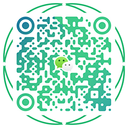

一、什么是提测 ？
“提测”即提交测试人员进行系统性的测试。进入到该流程说明开发人员对于模块的编写实现以及接口的完成是完全按照产品、设计师提供的prd以及设计图实现，然后测试人员开始测试的一个流程。
二、为什么要有提测这个流程？
开发提测是正式开始测试的重要关卡，提测质量的好坏会直接影响测试阶段的效率，进而影响项目进度。较好的提测质量，对提高测试效率和优化项目进度有着事半功倍的作用。
三、如果没有提测这个流程会有些什么样的影响？
功能跟产品PRD里的不一样，走偏了；前端BUG不断； 严重阻塞性BUG不断；测试环境极度不稳定，测试人员需要一直与开发人员沟通定位问题。这些问题都会造成极大的沟通成本、执行成本，也会占用很多资源，直接影响了整个部门对需求处理的吞吐量。
四、如何做好提测，以提高提测质量？
推进提测质量的提高，可以有很多种方式。每个公司或项目组都会有各自特点及相应适用匹配的方法流程。
在正式提测前开发实现中，可以通过方案讲解会、code review来提高实现质量及预期结果；正式提测阶段，可以通过自测用例、交互走查、视觉走查等方式把关质量；提测后，可以有产品验收等方式。在这里，主要和大家一起沟通下正式提测阶段的自测用例。
自测用例(冒烟测试用例)由测试在迭代开发完成之前以邮件的形式发送至开发人员邮箱中，开发人员在接收到邮件且完成开发后，自行根据测试用例进行自测(在此之前开发人员需先自行验证是否有报错)。
如开发人员在自测过程中发现存在与需求/设计图相违背的情况，需告知产品以及测试，三方进行协调决定是否采纳，如采纳则继续执行用例，不采纳则开发人员需重新整理方案后再继续执行用例。
提测的开始需由开发人员发送邮件至测试人员告知可进行提测，随即测试人员开始根据用例进行测试，若冒烟测试通过，则正式进入测试流程，开始进一步根据测试大纲进行测试；如若冒烟测试不通过且非机型问题，则测试人员向全体相关人员发送提测不通过邮件，开发人员需修改完成后重新自测，通过后可再次提测(一天时间内测试人员不接受两次提测)。
五、提测邮件模板
XXXX 需求提测通知
一、提测需求:
1. XXXX 需求文档：需求链接
2.接口文档：接口文档链接
二、提测环境:测试环境
三、自测结论:通过
四、提测范围:
1，提测XX功能，起到了XX的效果
2，测试类型为功能测试和接口测试(如有接口测试)
3，测试类型为功能测试
五、影响范围: 本次提测对XX功能/模块有影响，需要重点关注
五、影响范围: 本次提测对XX功能/模块有影响，需要重点关注
